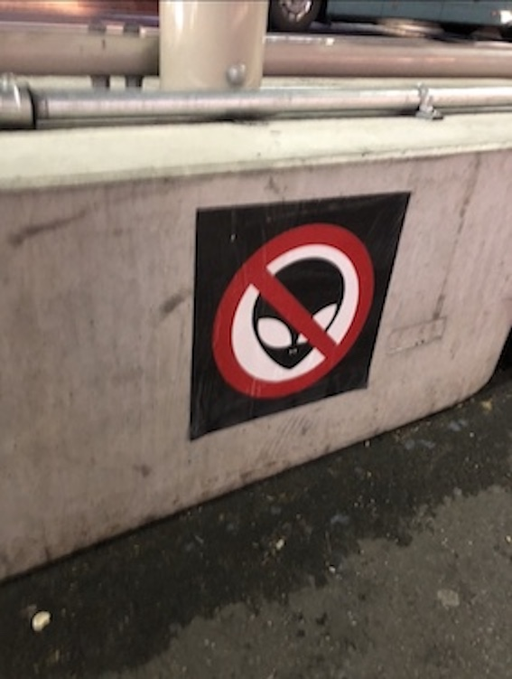
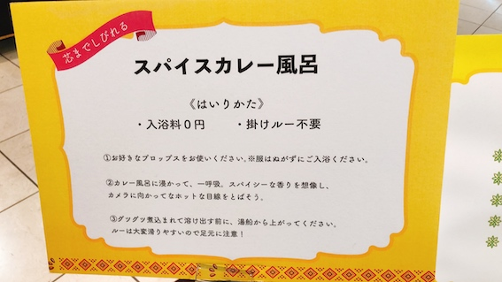

第2回
街中の看板・標識
1,エイリアン注意？

撮影場所：JR新宿駅近く
撮影者：筆者
この標識を見た時、新宿にはエイリアンが生息しているのか、と思いつい撮影してしまった一枚です。
高架下にあったので、作成者の方はもしかしたら、「変質者の出現が多いから注意しろ」という意図を持って作ったのかも…。
謎に包まれた作成者の意図、みなさんも是非考えてみてください！
真実が辿り着いた時、あなたはエイリアンになってるかも…
2,カレー風呂

撮影場所：JR川崎駅地下街
撮影者：筆者
これは、駅地下のショッピングモールでカレーフェアが行われていた時の看板です。
カレーに溺れるという意味からカレー風呂と表現したのかなぁ
3,線路なきところに駅あり

撮影場所：かつらぎ山
撮影者：筆者
静岡県のかつらぎ山の山頂付近に突如として現れた駅。
ここに本当に駅があるというわけではなく、これはただの山頂到達の目印の看板。
山の麓と山頂の２点を駅と捉えた、ユーモアのある看板。
前のページへ戻る